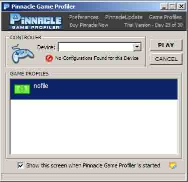

Achtergrondinformatie Ubiquitous v2.7
Hoe bewegen de 'spinnen'.: De spinnen hebben hetvolgende 'programma'; Loop een x aantal passen willekeurig rond, sla de hoogte en diepte-punten op; Na zoveel stappen bepaal welk put het hoogste en welk punt het laagste was; Ga naar het hoogste punt; Zuig van het hoogste punt
de helft van het hoogteverschil tussen het hoogste en laagste punt op. Ga naar het laagste punt, drop wat je net hebt opgezogen. ; Terug naar willekeurig rondlopen ;
Welke programma's zijn gebruikt?:
Grafisch : Flash actionscript 2.0,
communicatie: PHP
PHP krijgt informatie over de veranderingen in het beeld van flash, bijvoorbeeld ald een spin iets opzuigt. Dit word doorgestuurd naar php, die het opslaat in een .txt bestand. De ander computer checked elke seconde of een volgend genummerd bestand al bestaat, en zo ja, voert het de veranderingen door en verwijdert het textbestand. Dit alles is redelijk te volgen op ubiquitous.co.nr -> view log
Wat is die tekst die continue door het beeld vliegt?:
Dat is informatie vanuit flash die ik nodig had om te kunnen volgen of bepaalde verzoeken die ik aan een server deed ook binnenkwamen, en of er een goede reactie van server kwam. Nu is het er omdat ik het mooi vind, en ik ook nog eens handiger probleempjes kan opsporen
Waarom kan ik niets met de spinnetjes doen?:
Waarom is een bruin schilderij niet groen?
Waar slaat dit ding eigenlijk op?:
Behalve op volledig niets op een heleboel. 1 - De verwisseling van functie. Een vlak land is in het voordeel van landbouwers, in dit geval is de functie van de gebuiker die van 'vernietiging' van het harde werk van onze 'agents'(spinnetjes).
2 - Twee machines die elkaars invloed proberen op te heffen.
3 - Synchroniteit: Er is in deze constructie maar 1 landschap, en niet twee, hoewel je er wel twee ziet. Het zijn instanties van een landschap, en wat in de ene instantie is, is niet in de 2e instantie, doch wat in de ene instantie veranderd aan het landschap veranderd ook in de 2e instantie.
Als je beide landschappen als afzonderlijk bestaand zou beschouwen zou je in beiden gevolgen hebben zonder oorzaak. Of in ieder geval gevolgen zonder zichtbare oorzaak. Het is een model van paralelle werelden die beiden hun mysterie hebben. Voor de een is dit mysterie het continue opdoemen van gaten in het land, voor de andere is dit de vervlakking van het land. Voor beide is slechts een verklaring: De geest van hun voorouders :).
Groeten van Jasper
Gebruiksaanwijzing Ubiquitous v2.7
Probleem: De controller reageert niet:
Oplossing: Test eerst of het toetsenbord nog wel reageert, zo ja:
- Ga naar de Pinnacle Profiler (zie hieronder)

- klik op het eerste Profile. Hier heer dat 'nofile', op klaas z'n computer heet het IXPRESS setup geloof ik. Klik op PLAY.
- Hierna ga je terug naar het projectscherm, klik een paar keer op het gedeelte van het scherm waar de bergjes staan, en vervolgens zou de 'controller' weer moeten reageren. Stappen een of twee keer herhalen als het niet werkt.
- nb1: Je kan zien dat de Pinnacle Game Profiler draait als het icoontje rechtonder in de windows taakbalk te zien is. Hierop kan je dubbelklikken om het programma te activeren mocht dit nodig zijn. Mocht dit niet het geval zijn, staat er een link naar het programma onder START-->Alle Programma's-->Pinnacle
Probleem: De schermen lopen asynchroon, m.a.w de bergjes links zijn blijvend anders dan de bergjes rechts:
Oplossing: Ga naar het
hoofdmenu en klik op 'force reboot'; Als het goed is worden nu nieuwe bergjes gegenereerd en begint het weer opnieuw;
Probleem: Het is een grote ellende en niks doet het meer:
Oplossing: Sluit de mozilla firefox browser van klaas af. Vervolgens ga je op de laptop van Marie-Jean. Sluit daar het project-scherm af. Dat staat in de 2 monitor maar je kan het ook zien draaien in de taakbalk. (rechtermuis,sluiten) .
- (Op MJ's computer) Ga met de mozilla firefox browser naar www.ubiquitous.co.nr. Klik op de link 'delete all textfiles', wachtwoord invoegen, ok. Klik op start, verschuif het pop-up venster naar links naar buiten het scherm, toest F11 (voor fullscreen).
- (op Klaas' computer) Start de Pinnacle Game Profiler, selecteer profiel, klik play.
Start de Mozilla Firefox Browser, ga naar www.ubiquitous.co.nr , klik op start, project scherm maximaliseren, klik F11, (fullscreen), klik een keer op het midden van het scherm om het flash-deel te 'activeren', En alles doet het weer :) hoop ik...